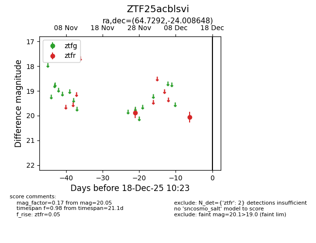
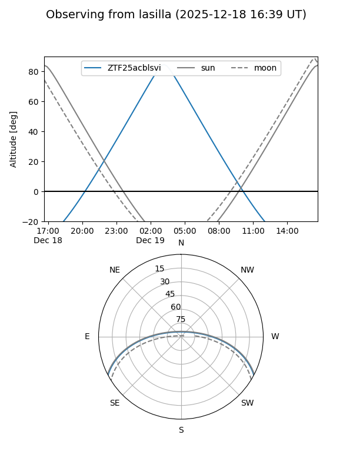
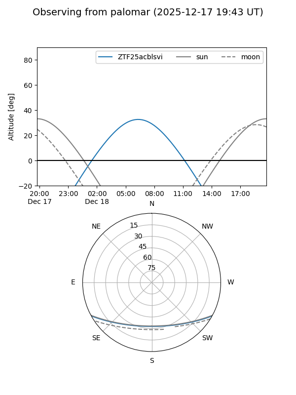

ZTF25acblsvi
Target ZTF25acblsvi at 2025-12-18 11:18
Aliases and brokers:
FINK: fink-portal.org/ZTF25acblsvi
Lasair: lasair-ztf.lsst.ac.uk/objects/ZTF25acblsvi
ALeRCE: alerce.online/object/ZTF25acblsvi
alt names
ZTF25acblsvi (ztf,fink_ztf)
Coordinates:
equatorial (ra, dec) = 64.7292,-24.00865
equatorial (HMS+DMS) = 04:18:55.00,-24:00:31.13
galactic (l, b) = (221.2396,-43.43337)
Photometry
last ztfr=20.05
2 ztfr detections
Lightcurve

Visibility


Additional plots